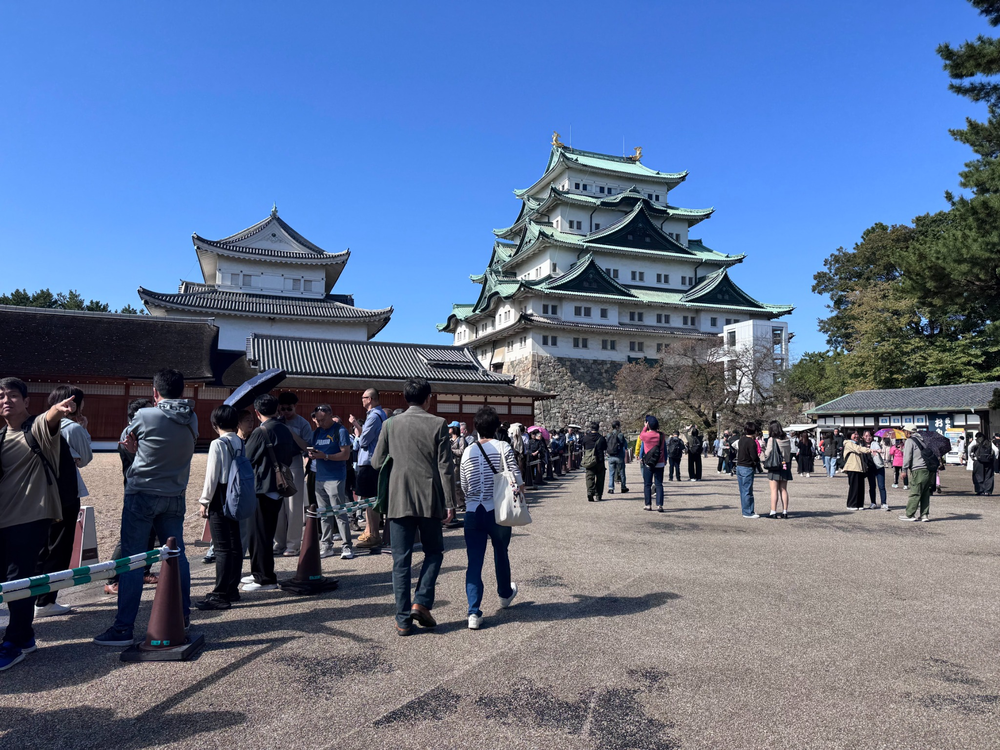
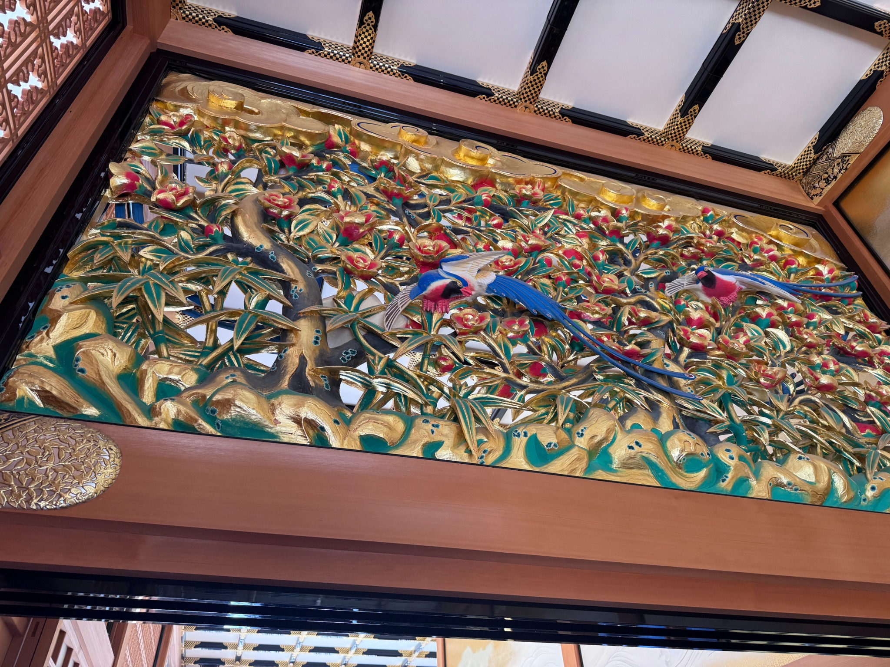
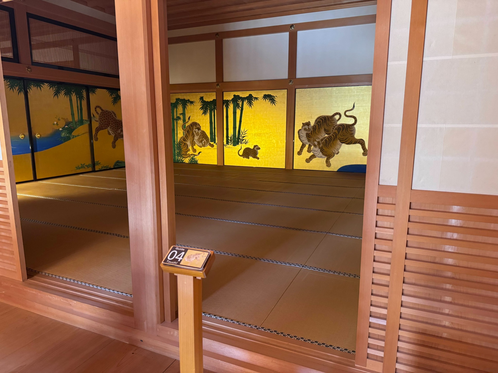
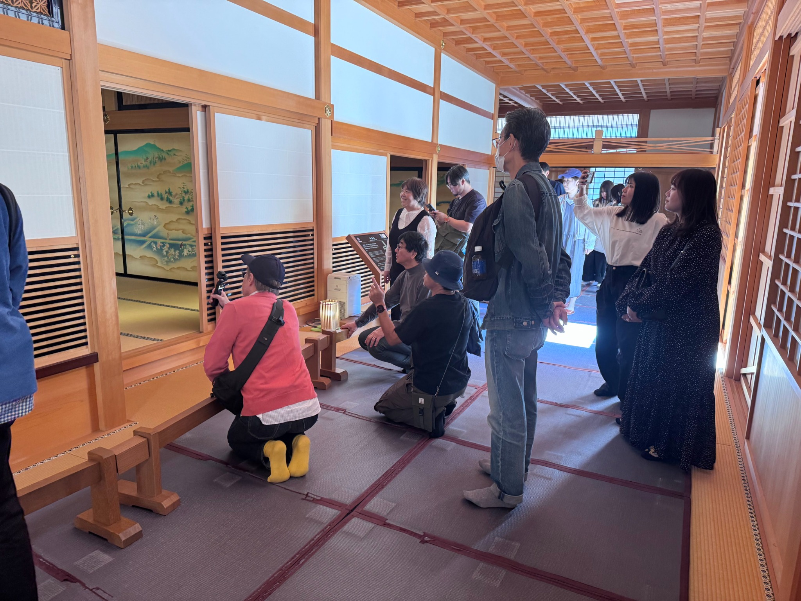
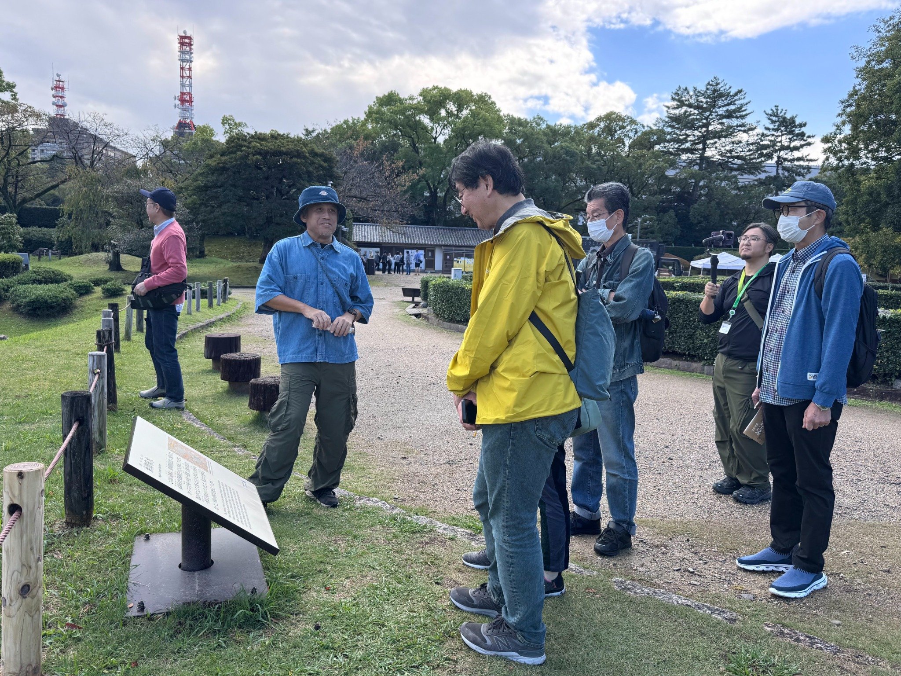
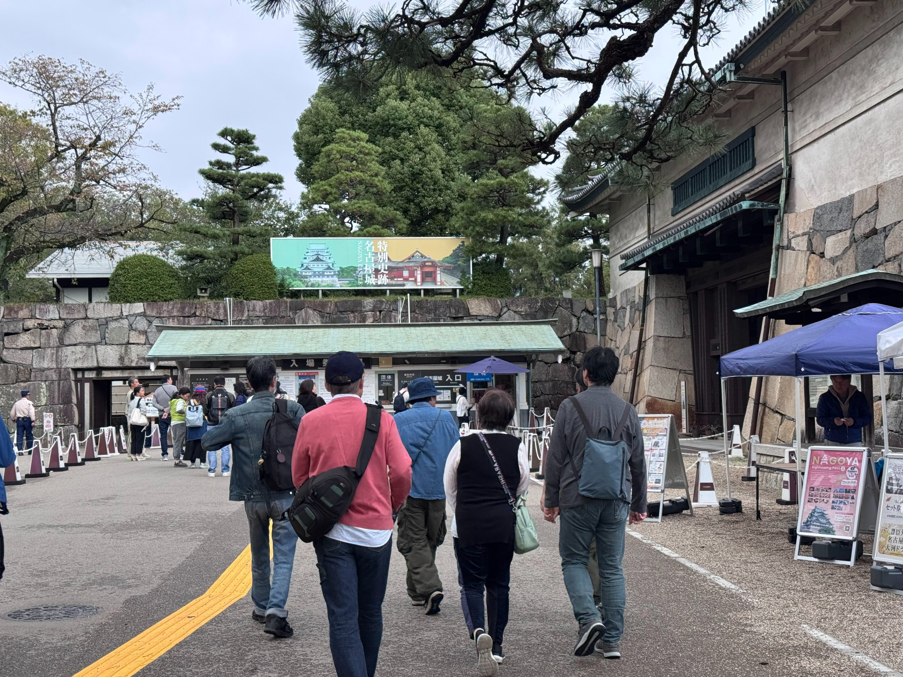
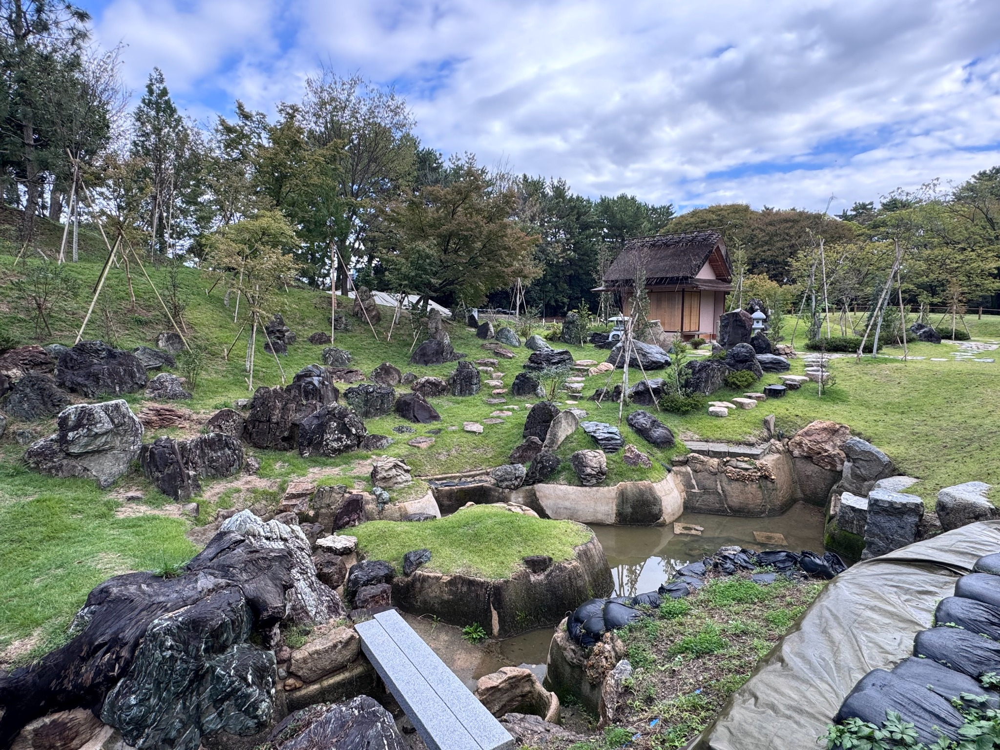
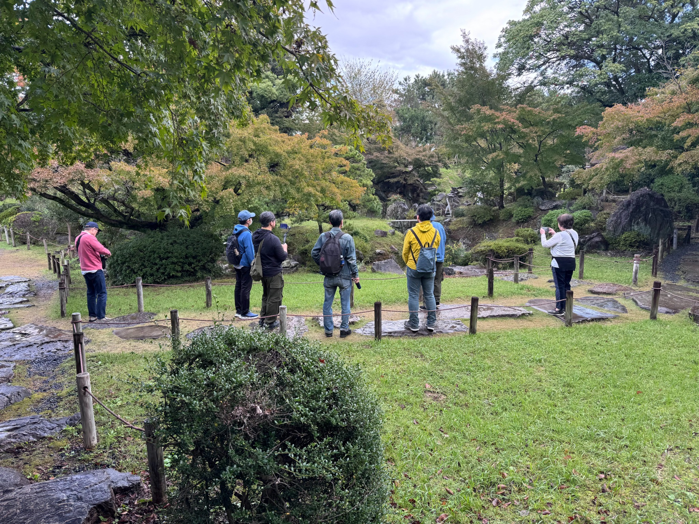

名古屋城を歩きながら、都市の魅力を再発見する
THINKナゴヤ OPEN MEETING Vol.2 では、「名古屋城フィールドワーク」を開催しました。
今回のテーマは、歩いて知る「過去・現在・未来」。名古屋を代表する歴史資産である名古屋城を実際に歩きながら、歴史や文化に触れ、今の都市の見え方やこれからの可能性について考える機会となりました。
参加者は、名古屋城の外観だけでなく、本丸御殿の意匠や庭園空間、周辺の景観や人の流れにも目を向けながら、それぞれの視点で名古屋の魅力を見つめ直しました。

建築と意匠から、名古屋の歴史・文化を感じる
フィールドワークの中では、本丸御殿の内部も見学しました。華やかな欄間や障壁画、木の質感が活きた空間構成など、名古屋の歴史や文化の厚みを感じられる場面が多くありました。
こうした文化資産は、単に保存する対象ではなく、都市の魅力を伝える重要な資源でもあります。実際に空間に身を置くことで、写真や資料だけでは伝わらない体験価値をあらためて実感する機会となりました。



歩きながら対話し、未来の名古屋を考える
当日は、現地を巡りながら参加者同士で感想や気づきを共有しました。歴史資産の活かし方、観光と日常の接点、都市の回遊性や景観のあり方など、現場を歩くからこそ生まれる会話が広がりました。
「見る」だけではなく、「感じたことを言葉にする」ことで、名古屋の過去・現在・未来が立体的につながっていく。今回のフィールドワークは、そんな対話の場にもなりました。


街歩きアプリで、発見を地図に残す
今回の名古屋城フィールドワークでは、街歩きマップアプリを活用して、歩きながら見つけた場所や気づきをピンとして記録しました。見慣れた風景も、立ち止まって観察し、記録することで新しい見え方が生まれます。
当日の記録を振り返る入口として、実際に利用した「Field Notes Map」をご案内します。アプリ内に保存されているピンの内容や表示範囲は、アプリ側でご確認ください。
FIELD NOTES MAP
街歩きイベントマップ
実際のマップアプリを表示しています。表示できない場合は外部リンクから開いてください。
※ アプリ側のセキュリティ設定によっては、このページ内で表示できない場合があります。その場合は「マップアプリを開く」をご利用ください。レポートページはピンの位置・内容を独自に再現したものではありません。
景観や緑の中にある、名古屋の可能性
フィールドワークでは、名古屋城周辺の庭園や緑地空間にも目を向けました。歴史的な建築だけでなく、緑や水辺、起伏のある地形が生み出す景色も、この場所の魅力の一つです。
都市の中心部にありながら、落ち着いて歩き、立ち止まり、対話できる環境があることは、名古屋の大きな資産です。こうした場をどう活かし、都市の魅力向上や交流の創出につなげていくかも、今後の大きなテーマだと感じられました。


現地で得た視点を、これからの議論へ
THINKナゴヤでは、こうした現地での体験や対話を、今後の議論や提言にもつなげていきます。
実際に歩き、見て、感じたことは、机上での議論だけでは得にくい示唆を与えてくれます。歴史資産や公共空間をどう未来につなげていくか。名古屋らしさをどのように磨き、発信していくか。今回のOPEN MEETING Vol.2 は、そのヒントを共有する時間になりました。